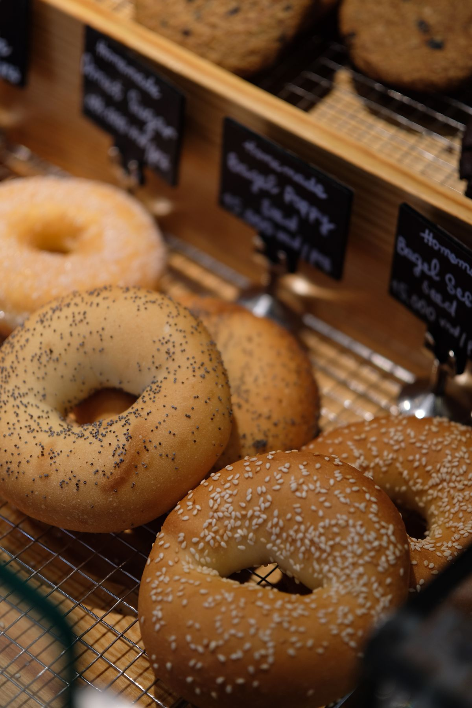
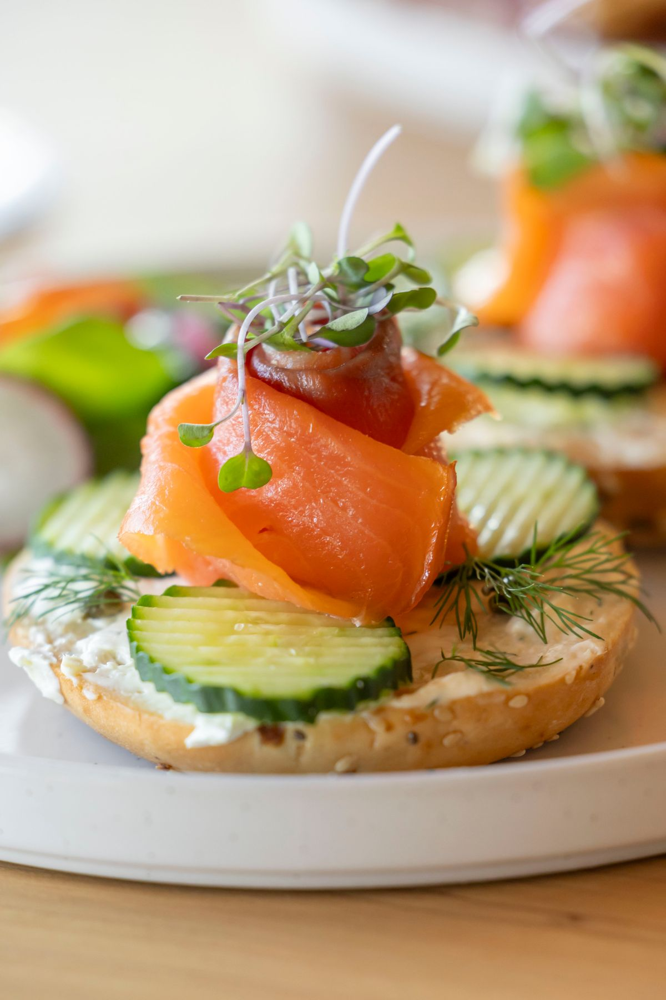
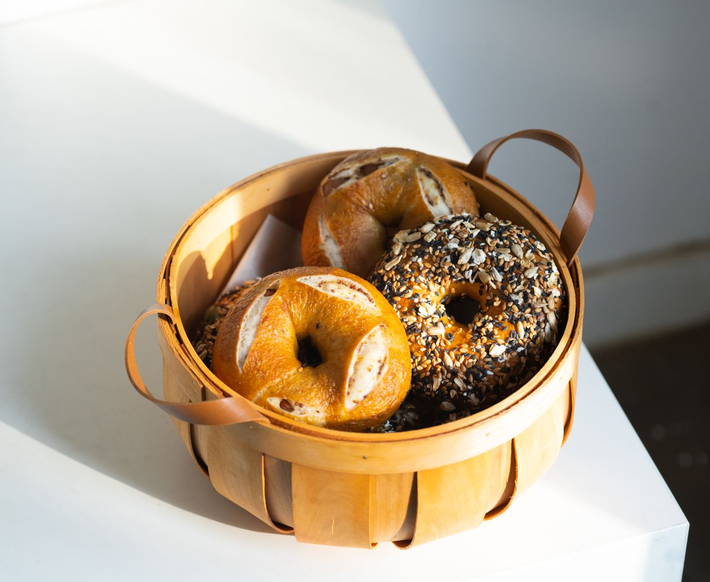

Bagel Bakery and Cafe, Slidell
Creole Bagelry and Café
Scratch-made, kettle-boiled New York-style bagels in Slidell since 2003, with breakfast, lunch, and catering.

About
Creole Bagelry and Cafe is a bagel bakery and cafe on Gause Boulevard in Slidell. The cafe has made scratch-made, kettle-boiled New York-style bagels since 2003, and serves bagel breakfast sandwiches, omelettes, benedicts, Belgian waffles, pancakes, French toast, lunch sandwiches, soups, salads, and specialty coffees, with catering available.
Menu
Scratch-made bagels
Kettle-boiled New York-style bagels, made from scratch since 2003.
Bagel breakfast sandwiches
Omelettes
Benedicts
Belgian waffles
Pancakes
French toast
Lunch sandwiches
Soups
Salads
Specialty coffees
Catering
Customer favorites
Customer favorites include the King cake bagel, T's roast beef po boy bagel, and breakfast egg rolls. Call (985) 649-6151 or email darren@creolebagelry.com to ask about the menu or catering.
Gallery


All gallery photos are stock photos, labeled as such. They show bagels and a smoked salmon bagel, not this cafe's food.
Visit
Address: 1337 Gause Blvd Suite 102, Slidell, LA 70458
Hours: Monday 6:30 AM to 2:00 PM. Tuesday to Friday 6:30 AM to 2:00 PM. Saturday and Sunday 8:00 AM to 2:00 PM. Kitchen closes at 1:45 PM.
Phone: (985) 649-6151
Email: darren@creolebagelry.com
Contact
Call (985) 649-6151 Email darren@creolebagelry.com
Creole Bagelry and Café serves Slidell, LA. Questions? Call (985) 649-6151.